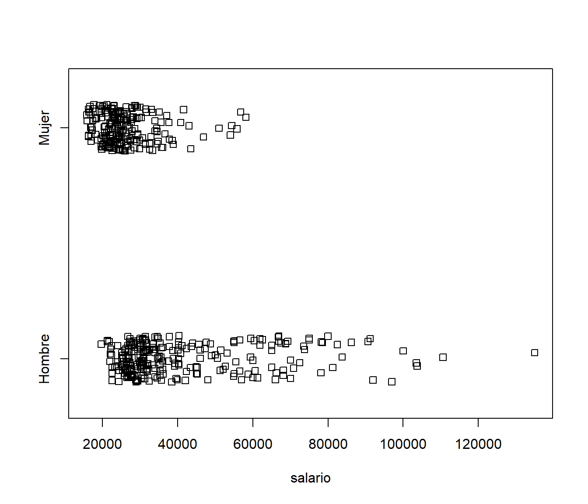
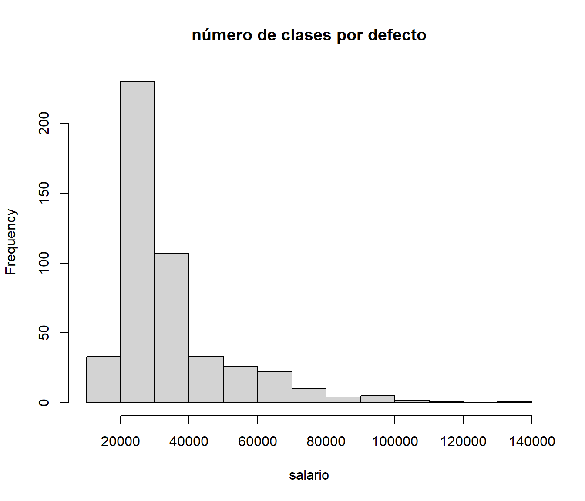
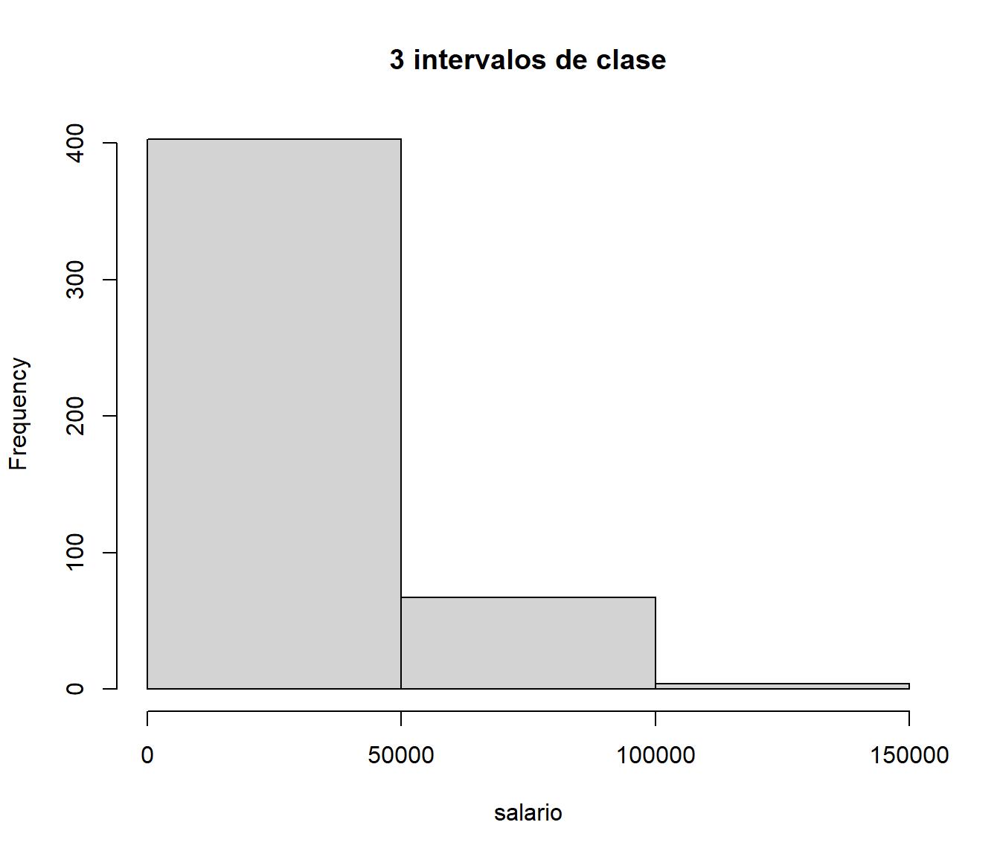
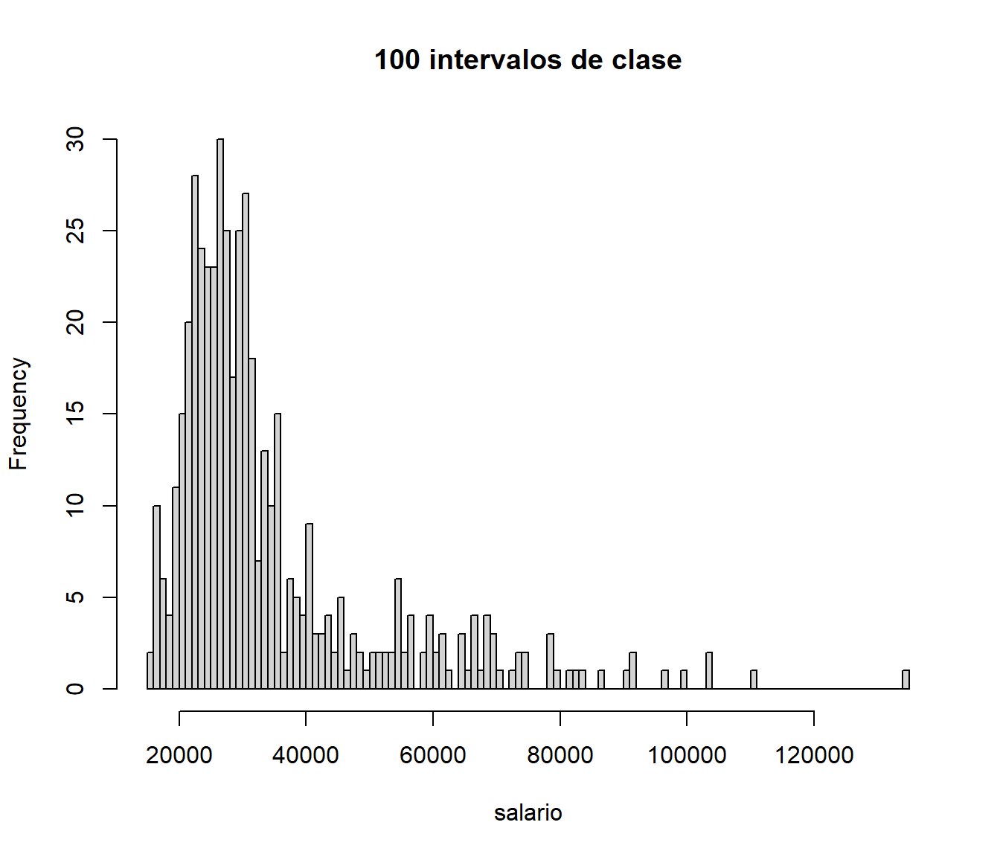
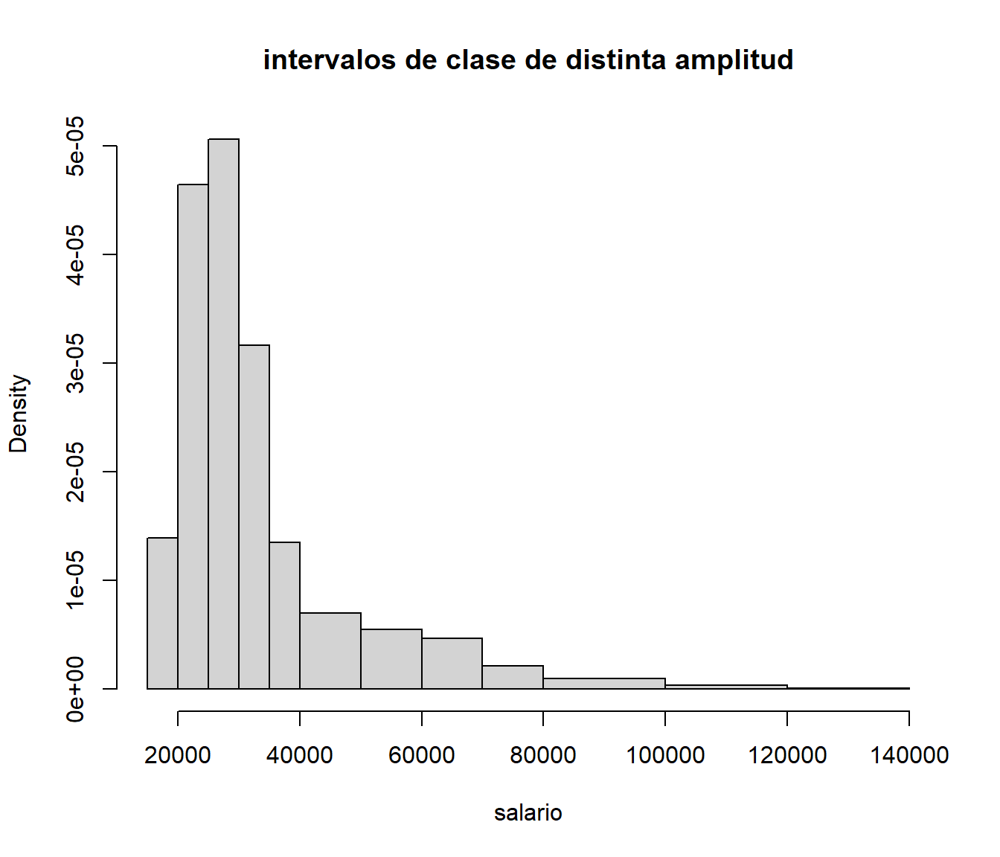
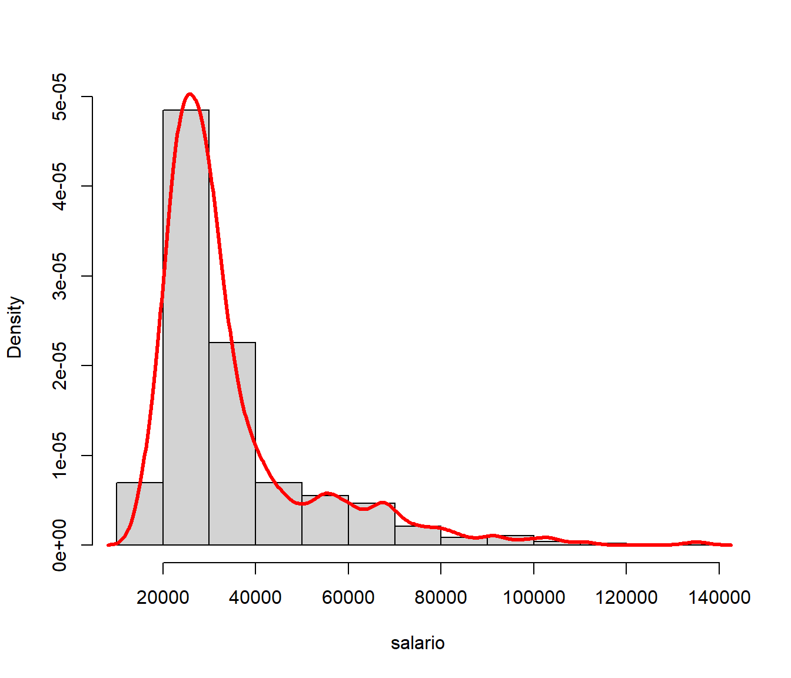
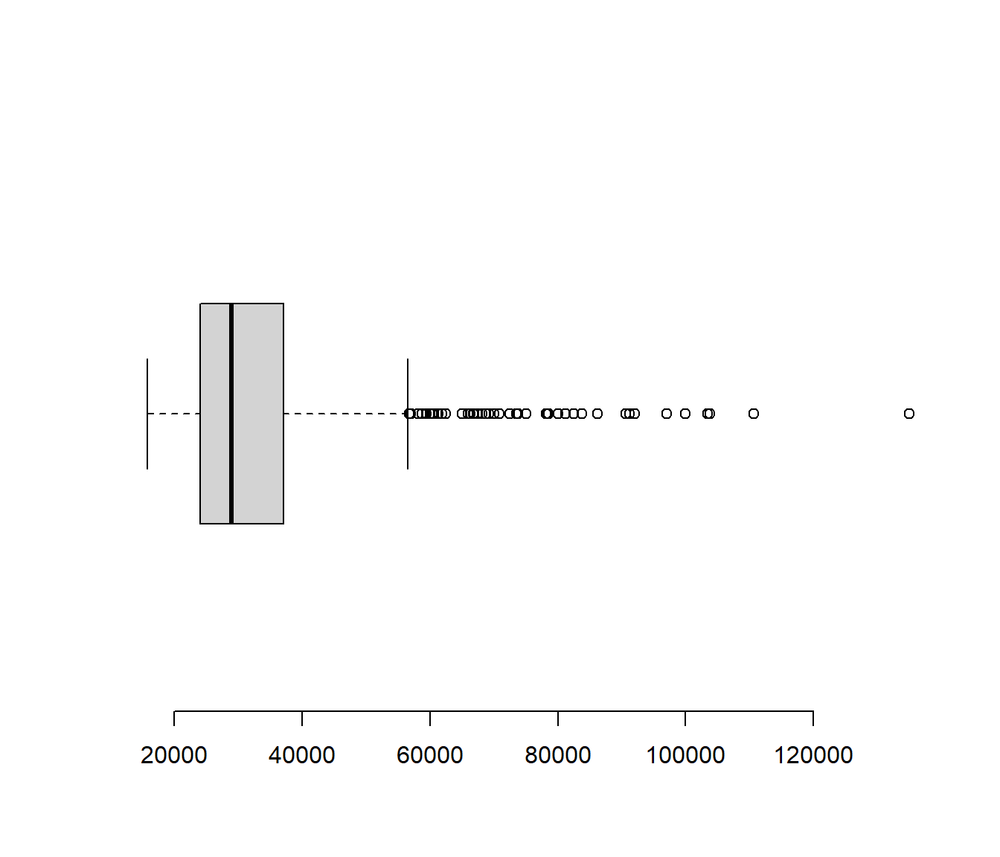
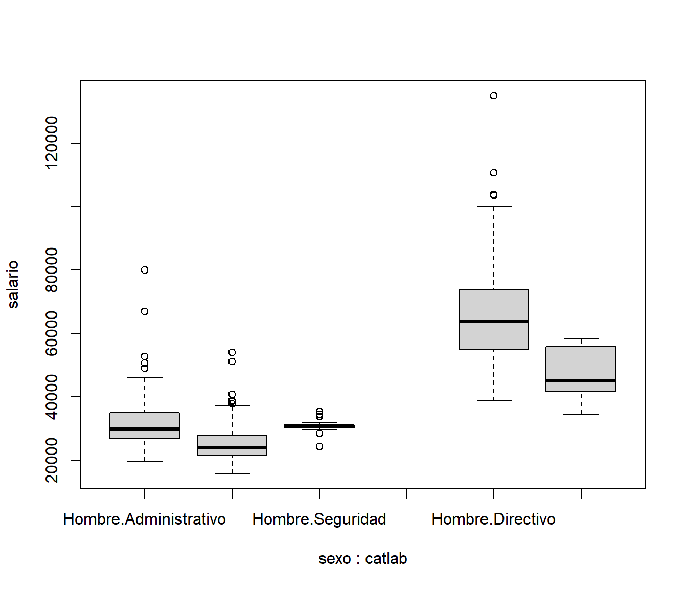
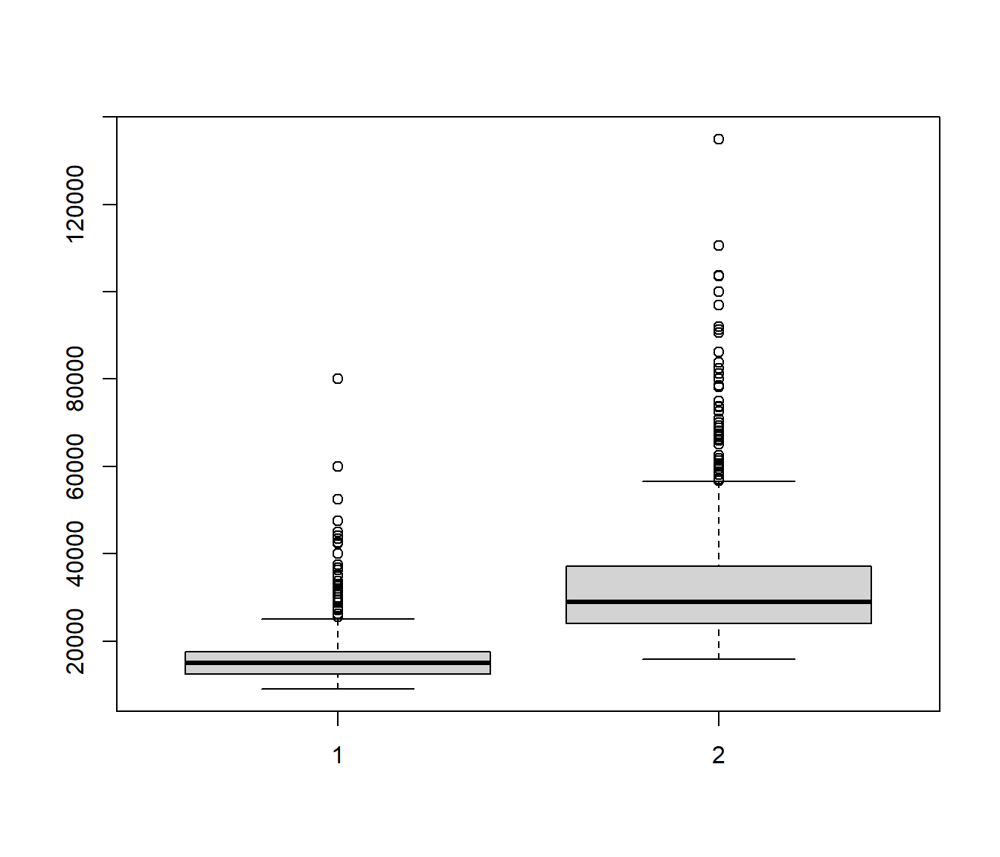
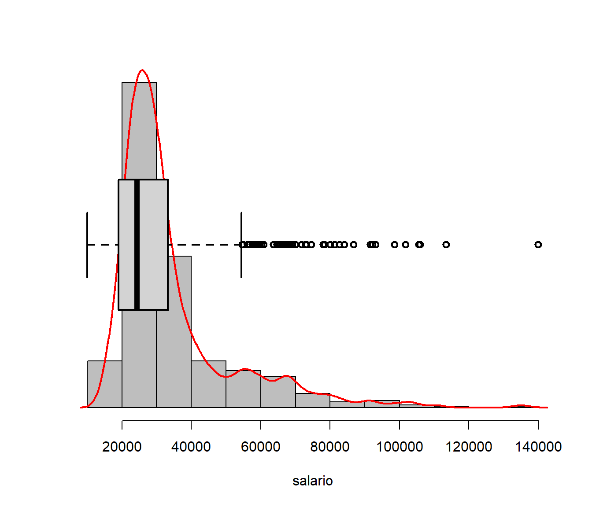

Capítulo 5 Análisis exploratorio de datos
El objetivo del análisis exploratorio de datos es presentar una descripción de los mismos que faciliten su análisis mediante procedimientos que permitan:
- Organizar los datos
- Resumirlos
- Representarlos gráficamente
- Análizar la información
5.1 Medidas resumen
5.1.1 Datos de ejemplo
El fichero empleados.RData contiene datos de empleados de un banco que utilizaremos, entre otros, a modo de ejemplo.
load("datos/empleados.RData")
data.frame(Etiquetas = attr(empleados, "variable.labels")) # Listamos las etiquetas## Etiquetas
## id Código de empleado
## sexo Sexo
## fechnac Fecha de nacimiento
## educ Nivel educativo (años)
## catlab Categoría Laboral
## salario Salario actual
## salini Salario inicial
## tiempemp Meses desde el contrato
## expprev Experiencia previa (meses)
## minoria Clasificación étnica
## sexoraza Clasificación por sexo y razaPara hacer referencia directamente a las variables de empleados
attach(empleados)5.1.2 Tablas de frecuencias
table(sexo)## sexo
## Hombre Mujer
## 258 216prop.table(table(sexo))## sexo
## Hombre Mujer
## 0.5443038 0.4556962table(sexo,catlab)## catlab
## sexo Administrativo Seguridad Directivo
## Hombre 157 27 74
## Mujer 206 0 10prop.table(table(sexo,catlab))## catlab
## sexo Administrativo Seguridad Directivo
## Hombre 0.33122363 0.05696203 0.15611814
## Mujer 0.43459916 0.00000000 0.02109705prop.table(table(sexo,catlab), 1)## catlab
## sexo Administrativo Seguridad Directivo
## Hombre 0.6085271 0.1046512 0.2868217
## Mujer 0.9537037 0.0000000 0.0462963prop.table(table(sexo,catlab), 2)## catlab
## sexo Administrativo Seguridad Directivo
## Hombre 0.4325069 1.0000000 0.8809524
## Mujer 0.5674931 0.0000000 0.1190476table(catlab,educ,sexo)## , , sexo = Hombre
##
## educ
## catlab 8 12 14 15 16 17 18 19 20 21
## Administrativo 10 48 6 78 10 2 2 1 0 0
## Seguridad 13 13 0 1 0 0 0 0 0 0
## Directivo 0 1 0 4 25 8 7 26 2 1
##
## , , sexo = Mujer
##
## educ
## catlab 8 12 14 15 16 17 18 19 20 21
## Administrativo 30 128 0 33 14 1 0 0 0 0
## Seguridad 0 0 0 0 0 0 0 0 0 0
## Directivo 0 0 0 0 10 0 0 0 0 0round(prop.table(table(catlab,educ,sexo)),2)## , , sexo = Hombre
##
## educ
## catlab 8 12 14 15 16 17 18 19 20 21
## Administrativo 0.02 0.10 0.01 0.16 0.02 0.00 0.00 0.00 0.00 0.00
## Seguridad 0.03 0.03 0.00 0.00 0.00 0.00 0.00 0.00 0.00 0.00
## Directivo 0.00 0.00 0.00 0.01 0.05 0.02 0.01 0.05 0.00 0.00
##
## , , sexo = Mujer
##
## educ
## catlab 8 12 14 15 16 17 18 19 20 21
## Administrativo 0.06 0.27 0.00 0.07 0.03 0.00 0.00 0.00 0.00 0.00
## Seguridad 0.00 0.00 0.00 0.00 0.00 0.00 0.00 0.00 0.00 0.00
## Directivo 0.00 0.00 0.00 0.00 0.02 0.00 0.00 0.00 0.00 0.00Si la variable es ordinal, entonces también son de interés las frecuencias acumuladas
table(educ)## educ
## 8 12 14 15 16 17 18 19 20 21
## 53 190 6 116 59 11 9 27 2 1prop.table(table(educ))## educ
## 8 12 14 15 16 17
## 0.111814346 0.400843882 0.012658228 0.244725738 0.124472574 0.023206751
## 18 19 20 21
## 0.018987342 0.056962025 0.004219409 0.002109705cumsum(table(educ))## 8 12 14 15 16 17 18 19 20 21
## 53 243 249 365 424 435 444 471 473 474cumsum(prop.table(table(educ)))## 8 12 14 15 16 17 18 19
## 0.1118143 0.5126582 0.5253165 0.7700422 0.8945148 0.9177215 0.9367089 0.9936709
## 20 21
## 0.9978903 1.00000005.1.3 Media y varianza
La media es la medida de centralización por excelencia. Para su cálculo se utiliza la instrucción mean
consumo<-c(6.9, 6.3, 6.2, 6.5 ,6.4, 6.8, 6.6)
mean(consumo)## [1] 6.528571dotchart(consumo,pch=16)
text(mean(consumo),2.5, pos=3,expression(bar(X)==6.53))
arrows(mean(consumo),0,mean(consumo),2.5,length = 0.15,col='red')
mean(salario)## [1] 34419.57mean(subset(empleados,catlab=='Directivo')$salario)## [1] 63977.8También se puede utilizar la función tapply, que se estudiará con detalle más adelante
tapply(salario, catlab, mean)## Administrativo Seguridad Directivo
## 27838.54 30938.89 63977.80La principal medida de dispersión es la varianza. En la práctica, cuando se trabaja con datos muestrales, se sustituye por la cuasi-varianza (también llamada varianza muestral corregida), que se calcula mediante el comando var
var(consumo)## [1] 0.06571429var(salario)## [1] 291578214La cuasi-desviación típica se calcula
sd(consumo)## [1] 0.256348sd(salario)## [1] 17075.66o, equivalentemente,
sqrt(var(consumo))## [1] 0.256348sqrt(var(salario))## [1] 17075.66La media de dispersión adimensional (relativa) más utilizada es el coeficiente de variación (de Pearson)
sd(consumo)/abs(mean(consumo))## [1] 0.03926555que también podemos expresar en tanto por cien
100*sd(consumo)/abs(mean(consumo))## [1] 3.926555El coeficiente de variación nos permite, entre otras cosas, comparar dispersiones de variables medidas en diferentes unidades
100*sd(salini)/abs(mean(salini))## [1] 46.2541100*sd(salario)/abs(mean(salario))## [1] 49.61033100*sd(expprev)/abs(mean(expprev))## [1] 109.10225.1.4 Mediana y cuantiles
La mediana es una medida de centralización robusta. Se calcula mediante median
diametro <- c(3.88,4.09,3.92,3.97,4.02,3.95, 4.03,3.92,3.98,5.60)
dotchart(diametro,pch=16,xlab="diámetro")
abline(v=mean(diametro),col='red',lwd=2)
abline(v=median(diametro),col='blue',lty=2,lwd=2)
legend("bottomright",c("media","mediana"),
col=c("red","blue"),lty=c(1,2),lwd=c(2,2),box.lty=0,cex=1.5)
Podemos comprobar que la variable salario presenta una asimetría derecha
mean(salario); median(salario)## [1] 34419.57## [1] 28875Calculemos cuántos empleados tienen un salario inferior al salario medio
mean(salario < mean(salario))## [1] 0.6940928paste('El ', round(100*mean(salario < mean(salario)),0), '%',
' de los empleados tienen un salario inferior al salario medio', sep='')## [1] "El 69% de los empleados tienen un salario inferior al salario medio"Como sabemos, la mitad de los empleados tienen un salario inferior a la mediana
mean(salario < median(salario))## [1] 0.5Los cuantiles son una generalización de la mediana, que se corresponde con el cuantil de orden 0.5. R contempla distintas formas de calcular los cuantiles
median(c(1,2,3,4))## [1] 2.5quantile(c(1,2,3,4),0.5)## 50%
## 2.5quantile(c(1,2,3,4),0.5,type=1)## 50%
## 2Calculemos los cuartiles y los deciles de la variable salario
quantile(salario)## 0% 25% 50% 75% 100%
## 15750.0 24000.0 28875.0 36937.5 135000.0quantile(salario, probs=c(0.25,0.5,0.75))## 25% 50% 75%
## 24000.0 28875.0 36937.5quantile(salario, probs=seq(0.1, 0.9, 0.1))## 10% 20% 30% 40% 50% 60% 70% 80% 90%
## 21045.0 22950.0 24885.0 26700.0 28875.0 30750.0 34500.0 40920.0 59392.5El rango y el rango intercuartílico
data.frame(Rango=max(salario)-min(salario),
RI=as.numeric(quantile(salario, 0.75) - quantile(salario, 0.25)))## Rango RI
## 1 119250 12937.55.1.5 Summary
summary(empleados)## id sexo fechnac educ
## Min. : 1.0 Hombre:258 Min. :1929-02-10 Min. : 8.00
## 1st Qu.:119.2 Mujer :216 1st Qu.:1948-01-03 1st Qu.:12.00
## Median :237.5 Median :1962-01-23 Median :12.00
## Mean :237.5 Mean :1956-10-08 Mean :13.49
## 3rd Qu.:355.8 3rd Qu.:1965-07-06 3rd Qu.:15.00
## Max. :474.0 Max. :1971-02-10 Max. :21.00
## NA's :1
## catlab salario salini tiempemp
## Administrativo:363 Min. : 15750 Min. : 9000 Min. :63.00
## Seguridad : 27 1st Qu.: 24000 1st Qu.:12488 1st Qu.:72.00
## Directivo : 84 Median : 28875 Median :15000 Median :81.00
## Mean : 34420 Mean :17016 Mean :81.11
## 3rd Qu.: 36938 3rd Qu.:17490 3rd Qu.:90.00
## Max. :135000 Max. :79980 Max. :98.00
##
## expprev minoria sexoraza
## Min. : 0.00 No:370 Blanca varón :194
## 1st Qu.: 19.25 Sí:104 Minoría varón: 64
## Median : 55.00 Blanca mujer :176
## Mean : 95.86 Minoría mujer: 40
## 3rd Qu.:138.75
## Max. :476.00
## summary(subset(empleados,catlab=='Directivo'))## id sexo fechnac educ
## Min. : 1.0 Hombre:74 Min. :1937-07-12 Min. :12.00
## 1st Qu.:102.5 Mujer :10 1st Qu.:1954-08-09 1st Qu.:16.00
## Median :233.5 Median :1961-05-29 Median :17.00
## Mean :234.1 Mean :1958-11-26 Mean :17.25
## 3rd Qu.:344.2 3rd Qu.:1963-10-03 3rd Qu.:19.00
## Max. :468.0 Max. :1966-04-05 Max. :21.00
## catlab salario salini tiempemp
## Administrativo: 0 Min. : 34410 Min. :15750 Min. :64.00
## Seguridad : 0 1st Qu.: 51956 1st Qu.:23063 1st Qu.:73.00
## Directivo :84 Median : 60500 Median :28740 Median :81.00
## Mean : 63978 Mean :30258 Mean :81.15
## 3rd Qu.: 71281 3rd Qu.:34058 3rd Qu.:91.00
## Max. :135000 Max. :79980 Max. :98.00
## expprev minoria sexoraza
## Min. : 3.00 No:80 Blanca varón :70
## 1st Qu.: 19.75 Sí: 4 Minoría varón: 4
## Median : 52.00 Blanca mujer :10
## Mean : 77.62 Minoría mujer: 0
## 3rd Qu.:125.25
## Max. :285.005.2 Gráficos
5.2.1 Diagrama de barras y gráfico de sectores
table(catlab)## catlab
## Administrativo Seguridad Directivo
## 363 27 84par(mfrow = c(1, 3))
barplot(table(catlab),main="frecuencia absoluta")
barplot(100*prop.table(table(catlab)),main="frecuencia relativa (%)")
pie(table(catlab))
nj <- table(educ)
fj <- prop.table(nj)
Nj <- cumsum(nj)
Fj <- cumsum(fj)
layout(matrix(c(1,2,5,3,4,5), 2, 3, byrow=TRUE), respect=TRUE)
barplot(nj,main="frecuencia absolutas",xlab='años de estudio')
barplot(fj,main="frecuencia relativas",xlab='años de estudio')
barplot(Nj,main="frecuencia absolutas acumuladas",xlab='años de estudio')
barplot(Fj,main="frecuencia relativas acumuladas",xlab='años de estudio')
pie(nj,col=rainbow(6),main='años de estudio')
par(mfrow = c(1, 1))Con datos continuos, podemos hacer uso de la función cut (más adelante veremos como se representa el histograma)
table(cut(expprev, breaks=5))##
## (-0.476,95.2] (95.2,190] (190,286] (286,381] (381,476]
## 312 81 46 22 13barplot(table(cut(expprev,breaks=5)),xlab="Experiencia previa",
main="Categorización en 5 clases")
Debemos ser muy cuidadosos a la hora de valorar gráficas como la siguiente
tt <- table(cut(expprev, breaks=c(0,40,80,150,250,400)))
barplot(tt,xlab="Experiencia previa", main="Categorización en 5 clases")
5.2.2 Gráfico de puntos
dotchart(salario, xlab='salarios')
stripchart(salario~sexo, method='jitter')
5.2.3 Árbol de tallo y hojas
Esta representación puede ser útil cuando se dispone de pocos datos.
stem(salario)##
## The decimal point is 4 digit(s) to the right of the |
##
## 1 | 666666777777777778888999
## 2 | 00000000000000111111111111111111122222222222222222222222233333333333+148
## 3 | 00000000000000000001111111111111111111111111122222222222223333333333+36
## 4 | 0000000001112222334445555666778899
## 5 | 0111123344555556677778999
## 6 | 0001122355566777888999
## 7 | 00134455889
## 8 | 01346
## 9 | 1127
## 10 | 044
## 11 | 1
## 12 |
## 13 | 5stem(tiempemp)##
## The decimal point is at the |
##
## 62 | 000
## 64 | 00000000000000000000000
## 66 | 000000000000000000000000000000000
## 68 | 0000000000000000000000000000000
## 70 | 0000000000000000
## 72 | 00000000000000000000000000
## 74 | 000000000000000
## 76 | 00000000000000000000000
## 78 | 000000000000000000000000000000000000
## 80 | 00000000000000000000000000000000000000
## 82 | 0000000000000000000000000000000000
## 84 | 000000000000000000000000
## 86 | 000000000000000000000000
## 88 | 00000000000000000000
## 90 | 00000000000000000000000000000
## 92 | 00000000000000000000000000000000000000
## 94 | 00000000000000000000
## 96 | 000000000000000000000000000
## 98 | 000000000000005.2.4 Histograma
Este gráfico es uno de los más habituales para representar datos continuos
hist(salario, main='número de clases por defecto')
hist(salario, breaks=3, main='3 intervalos de clase')
hist(salario, breaks=100, main='100 intervalos de clase')
cl1 <- seq(15000,40000,5000)
cl2 <- seq(50000,80000,10000)
cl3 <- seq(100000,140000,20000)
hist(salario, breaks=c(cl1,cl2,cl3),main='intervalos de clase de distinta amplitud')
5.2.5 Gráfico de densidad
Es una versión suavizada del histograma.
plot(density(salario))
hist(salario, freq=F, main='')
lines(density(salario), lwd=3, col='red')
El paquete car nos da acceso a la instrucción densityPlot:
library(car) # help(car)
densityPlot(salario~sexo)
5.2.6 Diagrama de cajas
Se trata de un gráfico muy polivalente
boxplot(salario, horizontal=T, axes=F)
axis(1)
par(mfrow=c(1,2))
boxplot(salario~catlab)
boxplot(salario~sexo)
par(mfrow=c(1,1))
boxplot(salario~sexo*catlab)
boxplot(salini, salario)
hist(salario,probability=T,ylab="",col='grey',axes=F,main=""); axis(1)
lines(density(salario),col='red',lwd=2)
par(new=T)
boxplot(salario,horizontal=T,axes=F,lwd=2)
5.2.7 Gráfica de dispersión
Permite ver la relación entre dos variables:
plot(educ,salario)
plot(tiempemp,salario)
plot(salini,salario)
En el caso de una serie temporal
AirPassengers## Jan Feb Mar Apr May Jun Jul Aug Sep Oct Nov Dec
## 1949 112 118 132 129 121 135 148 148 136 119 104 118
## 1950 115 126 141 135 125 149 170 170 158 133 114 140
## 1951 145 150 178 163 172 178 199 199 184 162 146 166
## 1952 171 180 193 181 183 218 230 242 209 191 172 194
## 1953 196 196 236 235 229 243 264 272 237 211 180 201
## 1954 204 188 235 227 234 264 302 293 259 229 203 229
## 1955 242 233 267 269 270 315 364 347 312 274 237 278
## 1956 284 277 317 313 318 374 413 405 355 306 271 306
## 1957 315 301 356 348 355 422 465 467 404 347 305 336
## 1958 340 318 362 348 363 435 491 505 404 359 310 337
## 1959 360 342 406 396 420 472 548 559 463 407 362 405
## 1960 417 391 419 461 472 535 622 606 508 461 390 432plot(AirPassengers)
Y un último ejemplo utilizando los datos iris de Fisher:
plot(iris[,3],iris[,4],main="Longitud y anchura de pétalos de lirios",
xlab="Longitud de pétalo",ylab="Anchura de pétalo")
iris.color<-c("red","green","blue")[iris$Species]
plot(iris[,3],iris[,4],col=iris.color,main="Longitud y anchura
de pétalo según especies",xlab="Longitud de pétalo",
ylab="Anchura de pétalo")
legend("topleft",c("Setosa","Versicolor","Virginica"),pch=1,
col=c("red","green","blue"),box.lty=0)
pairs(iris[,1:4],col=iris.color)